Capítulo 3 Regularización Elasticnet
En muchas técnicas de aprendizaje automático, el aprendizaje consiste en encontrar los coeficientes que minimizan una función de costo. Un modelo estándar de mínimos cuadrados tiende a tener alguna variación, es decir, este modelo no se generalizará bien para un conjunto de datos diferente a sus datos de entrenamiento.
La regularización consiste en añadir una penalización a la función de costo. Esta penalización produce modelos más simples que generalizan mejor y evita el riesgo de sobre-ajuste.
El procedimiento de ajuste implica una función de pérdida, conocida como suma de cuadrados residual o RSS. Los coeficientes \(\beta\) se eligen de manera que minimicen esta función de pérdida.
\[RSS = \sum_{i=1}^n\left(y_i - \beta_0- \sum_{i=1}^p \beta_jx_{ij}\right)^2\]
Esto ajustará los coeficientes en función de sus datos de entrenamiento. Si hay ruido en los datos de entrenamiento, los coeficientes estimados no se generalizarán bien a los datos futuros. Aquí es donde entra la regularización y reduce o regulariza estas estimaciones aprendidas hacia cero.
En esta sección se verán las regularizaciones más usadas en machine learning:
- Ridge (conocida también como L2)
- Lasso (también conocida como L1)
- ElasticNet que combina tanto Lasso como Ridge.
Para cada una de estas regularizaciones ajustaremos modelos lineales con scikit-learn. En regresión usaremos el conjunto de viviendas de Ames; en clasificación usaremos el conjunto de abandono de clientes de Telco.
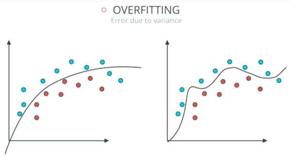
3.1 Regularización Ridge
En este tipo de regularización RSS se modifica agregando una cantidad de contracción a los coeficientes, los cuales se estiman minimizando esta función. \(\lambda\) es el parámetro de ajuste que decide cuánto queremos penalizar la flexibilidad de el modelo.
\[\sum_{i=1}^n\left(y_i - \beta_0- \sum_{i=1}^p \beta_jx_{ij}\right)^2 + \lambda \sum_{j=1}^p \beta_j^2 = RSS + \lambda \sum_{j=1}^p \beta_j^2\]
El aumento de la flexibilidad de un modelo está representado por el aumento de sus coeficientes, si se desea minimizar la función anterior, los coeficientes deben ser pequeños.
Así es como la técnica de regresión de Ridge evita que los coeficientes aumenten demasiado. Además, reduce la asociación estimada de cada variable con la respuesta excepto la intersección \(\beta_0\). Esta intersección es una medida del valor medio de la respuesta cuando \(x_{i1} = x_{i2} =\dots= x_{ip} = 0\).
Cuando \(\lambda = 0\), el término de penalización no tiene efecto y las estimaciones serán iguales a mínimos cuadrados.
A medida que \(\lambda \rightarrow \infty\), el impacto de la penalización por contracción aumenta, y las estimaciones se acercarán a cero.
La selección de un buen valor de \(\lambda\) es fundamental. Las estimaciones de coeficientes producidas por este método también se conocen como la norma L2.
Nota: Es necesario estandarizar los predictores o llevarlos a la misma escala antes de aplicar esta regularización.
3.2 Regularización Lasso
Lasso es otra variación, en la que se minimiza la función RSS. Utiliza \(|\beta_j|\) en lugar de los cuadrados de \(\beta\) como penalización. Las estimaciones de coeficientes producidas por este método también se conocen como la norma L1.
\[\sum_{i=1}^n\left(y_i - \beta_0- \sum_{i=1}^p \beta_jx_{ij}\right)^2 + \lambda \sum_{j=1}^p |\beta_j| = RSS + \lambda \sum_{j=1}^p |\beta_j|\]
Cuando \(\lambda = 0\), el término de penalización no tiene efecto y las estimaciones serán iguales a mínimos cuadrados.
A medida que \(\lambda \rightarrow \infty\), el impacto de la penalización por contracción aumenta, y las estimaciones se convierten en cero (eliminando variables).
Este método de regularización permite eliminar coeficientes con alta variación, lo cual ayuda a la selección de variables.
3.3 Comparación entre Ridge y Lasso
La regresión Ridge se puede considerar como la solución de una ecuación, donde la suma de los cuadrados de los coeficientes es menor o igual que \(s\), donde \(s\) es una constante que existe para cada valor del factor de contracción \(\lambda\)
\[\beta_1^2 + \beta_2^2 \leq s\]
Esto implica que los coeficientes de la regresión Ridge tienen el RSS (función de pérdida) más pequeño para todos los puntos que se encuentran dentro del círculo dado por la función de restricción \(\beta_1^2 + \beta_2^2 \leq s\).
Y en la regresión Lasso se puede considerar como una ecuación en la que la suma del módulo de coeficientes es menor o igual que \(s\).
\[|\beta_1| + |\beta_2| \leq s\]
Esto implica que los coeficientes de lasso tienen la RSS (función de pérdida) más pequeña para todos los puntos que se encuentran dentro del diamante dado por la función de restricción \(|\beta_1| + |\beta_2| \leq s\)
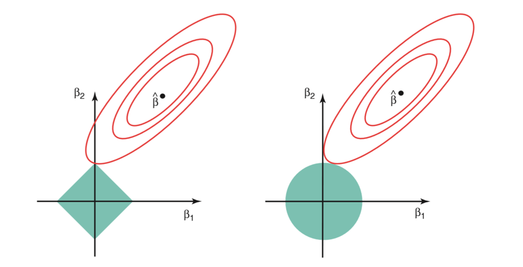
La imagen de arriba muestra las funciones de restricción (áreas verdes) para Lasso (izquierda) y Ridge (derecha), junto con contornos para RSS (elipse roja).
Para un valor muy grande de \(s\), las regiones verdes contendrán el centro de la elipse, lo que hará que las estimaciones de los coeficientes de ambas técnicas de regresión sean iguales a las estimaciones de mínimos cuadrados. Pero este no es el caso en la imagen de arriba.
En este caso, las estimaciones del coeficiente de regresión de Lasso y Ridge vienen dadas por el primer punto en el que una elipse contacta con la región de restricción. Dado que la regresión Ridge tiene una restricción circular sin puntos agudos, esta intersección generalmente no ocurrirá en un eje, por lo que las estimaciones del coeficiente de regresión de Ridge serán exclusivamente distintas de cero.
Sin embargo, la restricción de Lasso tiene esquinas en cada uno de los ejes, por lo que la elipse a menudo intersectará la región de restricción en un eje. Cuando esto ocurre, uno de los coeficientes será igual a cero. En dimensiones más altas, muchas de las estimaciones de coeficientes pueden ser iguales a cero simultáneamente.
Desventajas
Regresión Ridge: Reducirá los coeficientes de los predictores menos importantes, muy cerca de cero. Pero nunca los hará exactamente cero. En otras palabras, el modelo final incluirá todos los predictores.
Regresión Lasso: La penalización L1 tiene el efecto de forzar algunas de las estimaciones de coeficientes a ser exactamente iguales a cero cuando el parámetro de ajuste \(\lambda\) es suficientemente grande. Por lo tanto, este método realiza una selección de variables.
3.4 ElasticNet
ElasticNet surgió por primera vez como resultado de la crítica a Lasso, cuya selección de variables puede ser demasiado dependiente de los datos y, por lo tanto, inestable. La solución es combinar las penalizaciones de la regresión de Ridge y Lasso para obtener lo mejor de ambas regularizaciones.
ElasticNet tiene como objetivo minimizar la siguiente función de pérdida:
\[\frac{\sum_{i=1}^n\left(y_i - \beta_0- \sum_{i=1}^p \beta_jx_{ij}\right)^2}{2n} + \lambda\left(\alpha \sum_{j=1}^p|\beta_j| + \frac{1-\alpha}{2} \sum_{j=1}^p \beta_j ^2\right)\]
\[= \frac{RSS}{2n}+ \lambda\left(\alpha \sum_{j=1}^p|\beta_j| + \frac{1-\alpha}{2} \sum_{j=1}^p \beta_j ^2\right)\]
donde \(\alpha \in [0,1]\) es el parámetro de mezcla entre la regularización Ridge \((\alpha = 0)\) y la regularización Lasso \((\alpha = 1)\). En scikit-learn, este parámetro se llama l1_ratio; la intensidad total de la penalización se controla con alpha en regresión y con C en regresión logística.
La combinación de ambas penalizaciones suele dar lugar a buenos resultados. Una estrategia frecuentemente utilizada es asignarle casi todo el peso a la penalización L1 ( \(\alpha \approx 1\)) para conseguir seleccionar predictores y menos peso a la regularización \(L2\) para dar cierta estabilidad en el caso de que algunos predictores estén correlacionados.
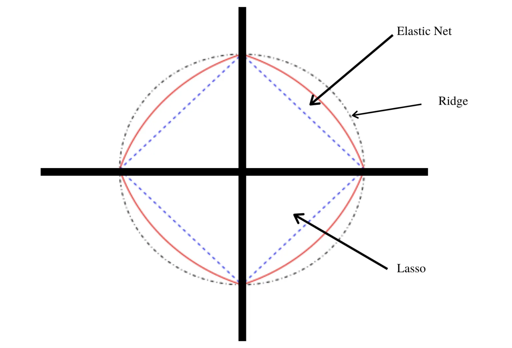
3.5 Implementación en Python
3.5.1 Regresión
Utilizaremos Ridge, Lasso y ElasticNet de sklearn.linear_model. El preprocesamiento se encapsula en un Pipeline, de forma que la imputación, escalamiento y codificación de variables se estimen solamente con los datos de entrenamiento.
En scikit-learn los parámetros principales son:
alpha: intensidad total de regularización enRidge,LassoyElasticNet. Valores mayores producen coeficientes más pequeños.l1_ratio: proporción de regularización L1 enElasticNet. Cuandol1_ratio = 1, el comportamiento es equivalente a Lasso; cuandol1_ratio = 0, es equivalente a Ridge. Para los casos puros usaremos directamenteRidgeyLasso.
Paso 1: Separación inicial de datos ( test, train, KFCV )
import matplotlib.pyplot as plt
import numpy as np
import pandas as pd
from IPython.display import display
from scipy.stats import loguniform, uniform
from sklearn.linear_model import ElasticNet, Lasso, LogisticRegression, Ridge
from sklearn.metrics import average_precision_score, make_scorer
from sklearn.model_selection import KFold, RandomizedSearchCV, StratifiedKFold, train_test_split
from dsml_utils import (
best_cv_results,
classification_metrics,
load_ames,
load_telco,
make_ames_pipeline,
make_telco_pipeline,
pr_curve_table,
regression_metrics,
roc_curve_table,
)
ames = load_ames()
ames_train, ames_test = train_test_split(ames, train_size=0.75, random_state=4595)
X_ames_train = ames_train.drop(columns="Sale_Price")
y_ames_train = ames_train["Sale_Price"]
X_ames_test = ames_test.drop(columns="Sale_Price")
y_ames_test = ames_test["Sale_Price"]
ames_folds = KFold(n_splits=5, shuffle=True, random_state=4595)Contando con datos de entrenamiento, procedemos a realizar el feature engineering para extraer las mejores características que permitirán realizar las estimaciones en el modelo.
Paso 2: Pre-procesamiento e ingeniería de variables
receta_casas = make_ames_pipeline(ElasticNet(max_iter=20_000), scale_numeric=True)
receta_casas## Pipeline(steps=[('features',
## DataFrameFunctionTransformer(func=<function preprocess_ames_frame at 0x17af62660>,
## kw_args={'keep_target': False,
## 'large': False})),
## ('preprocess',
## ColumnTransformer(transformers=[('num',
## Pipeline(steps=[('imputer',
## SimpleImputer(strategy='median')),
## ('scaler',
## StandardScaler())]),
## <sklearn.compose._column_transformer.make_column_selector object at 0x307e9d790>),
## ('cat',
## Pipeline(steps=[('imputer',
## SimpleImputer(strategy='most_frequent')),
## ('onehot',
## OneHotEncoder(handle_unknown='ignore',
## sparse_output=False))]),
## <sklearn.compose._column_transformer.make_column_selector object at 0x30842f610>)],
## verbose_feature_names_out=False)),
## ('model', ElasticNet(max_iter=20000))])Recordemos que un Pipeline contiene los pasos a seguir. Usamos fit() para estimar transformaciones y modelo, y transform() o predict() para aplicarlo a nuevos datos.
Una vez que la receta de transformación de datos está lista, procedemos a implementar el pipeline del modelo de interés.
Paso 3: Selección de tipo de modelo con hiperparámetros iniciales
ridge_regression_model = Ridge()
lasso_regression_model = Lasso(max_iter=20_000)
elasticnet_regression_model = ElasticNet(max_iter=20_000)
elasticnet_regression_model## ElasticNet(max_iter=20000)Paso 4: Inicialización de workflow o pipeline
ridge_workflow = make_ames_pipeline(ridge_regression_model, scale_numeric=True)
lasso_workflow = make_ames_pipeline(lasso_regression_model, scale_numeric=True)
elasticnet_workflow = make_ames_pipeline(elasticnet_regression_model, scale_numeric=True)
elasticnet_workflow## Pipeline(steps=[('features',
## DataFrameFunctionTransformer(func=<function preprocess_ames_frame at 0x17af62660>,
## kw_args={'keep_target': False,
## 'large': False})),
## ('preprocess',
## ColumnTransformer(transformers=[('num',
## Pipeline(steps=[('imputer',
## SimpleImputer(strategy='median')),
## ('scaler',
## StandardScaler())]),
## <sklearn.compose._column_transformer.make_column_selector object at 0x30848e510>),
## ('cat',
## Pipeline(steps=[('imputer',
## SimpleImputer(strategy='most_frequent')),
## ('onehot',
## OneHotEncoder(handle_unknown='ignore',
## sparse_output=False))]),
## <sklearn.compose._column_transformer.make_column_selector object at 0x30848f650>)],
## verbose_feature_names_out=False)),
## ('model', ElasticNet(max_iter=20000))])Antes de optimizar hiperparámetros, comparemos los tres enfoques con valores fijos de regularización:
regularized_models = {
"Ridge": make_ames_pipeline(Ridge(alpha=10), scale_numeric=True),
"Lasso": make_ames_pipeline(Lasso(alpha=1_000, max_iter=20_000), scale_numeric=True),
"ElasticNet": make_ames_pipeline(ElasticNet(alpha=1_000, l1_ratio=0.5, max_iter=20_000), scale_numeric=True),
}
comparison_rows = []
for name, model in regularized_models.items():
model.fit(X_ames_train, y_ames_train)
predictions = model.predict(X_ames_test)
metrics = regression_metrics(y_ames_test, predictions)
coefficients = model.named_steps["model"].coef_
comparison_rows.append(
{
"modelo": name,
"rmse": metrics.query("metric == 'rmse'")["estimate"].iloc[0],
"mae": metrics.query("metric == 'mae'")["estimate"].iloc[0],
"rsq": metrics.query("metric == 'rsq'")["estimate"].iloc[0],
"coeficientes_no_cero": np.sum(np.abs(coefficients) > 1e-8),
}
)## Pipeline(steps=[('features',
## DataFrameFunctionTransformer(func=<function preprocess_ames_frame at 0x17af62660>,
## kw_args={'keep_target': False,
## 'large': False})),
## ('preprocess',
## ColumnTransformer(transformers=[('num',
## Pipeline(steps=[('imputer',
## SimpleImputer(strategy='median')),
## ('scaler',
## StandardScaler())]),
## <sklearn.compose._column_transformer.make_column_selector object at 0x308469a10>),
## ('cat',
## Pipeline(steps=[('imputer',
## SimpleImputer(strategy='most_frequent')),
## ('onehot',
## OneHotEncoder(handle_unknown='ignore',
## sparse_output=False))]),
## <sklearn.compose._column_transformer.make_column_selector object at 0x30846bc10>)],
## verbose_feature_names_out=False)),
## ('model', Ridge(alpha=10))])
## Pipeline(steps=[('features',
## DataFrameFunctionTransformer(func=<function preprocess_ames_frame at 0x17af62660>,
## kw_args={'keep_target': False,
## 'large': False})),
## ('preprocess',
## ColumnTransformer(transformers=[('num',
## Pipeline(steps=[('imputer',
## SimpleImputer(strategy='median')),
## ('scaler',
## StandardScaler())]),
## <sklearn.compose._column_transformer.make_column_selector object at 0x308461790>),
## ('cat',
## Pipeline(steps=[('imputer',
## SimpleImputer(strategy='most_frequent')),
## ('onehot',
## OneHotEncoder(handle_unknown='ignore',
## sparse_output=False))]),
## <sklearn.compose._column_transformer.make_column_selector object at 0x3084609d0>)],
## verbose_feature_names_out=False)),
## ('model', Lasso(alpha=1000, max_iter=20000))])
## Pipeline(steps=[('features',
## DataFrameFunctionTransformer(func=<function preprocess_ames_frame at 0x17af62660>,
## kw_args={'keep_target': False,
## 'large': False})),
## ('preprocess',
## ColumnTransformer(transformers=[('num',
## Pipeline(steps=[('imputer',
## SimpleImputer(strategy='median')),
## ('scaler',
## StandardScaler())]),
## <sklearn.compose._column_transformer.make_column_selector object at 0x308460dd0>),
## ('cat',
## Pipeline(steps=[('imputer',
## SimpleImputer(strategy='most_frequent')),
## ('onehot',
## OneHotEncoder(handle_unknown='ignore',
## sparse_output=False))]),
## <sklearn.compose._column_transformer.make_column_selector object at 0x3084611d0>)],
## verbose_feature_names_out=False)),
## ('model', ElasticNet(alpha=1000, max_iter=20000))])pd.DataFrame(comparison_rows).round(3)## modelo rmse mae rsq coeficientes_no_cero
## 0 Ridge 41191.958 17517.684 0.715 293
## 1 Lasso 42958.389 19613.680 0.690 35
## 2 ElasticNet 76172.812 56427.263 0.026 197Paso 5: Creación de grid search
elasticnet_param_distributions = {
"model__alpha": loguniform(1e-4, 1e2),
"model__l1_ratio": uniform(0.05, 0.95),
}
regression_scoring = {
"rmse": "neg_root_mean_squared_error",
"mae": "neg_mean_absolute_error",
"mape": "neg_mean_absolute_percentage_error",
"rsq": "r2",
}
elasticnet_param_distributions## {'model__alpha': <scipy.stats._distn_infrastructure.rv_continuous_frozen object at 0x307e5ec90>, 'model__l1_ratio': <scipy.stats._distn_infrastructure.rv_continuous_frozen object at 0x3060ff050>}Paso 6: Entrenamiento de modelos con hiperparámetros definidos
elasticnet_tune_result = RandomizedSearchCV(
elasticnet_workflow,
param_distributions=elasticnet_param_distributions,
n_iter=50,
cv=ames_folds,
scoring=regression_scoring,
refit="rmse",
random_state=195628,
n_jobs=-1,
)
elasticnet_tune_result.fit(X_ames_train, y_ames_train)
import joblib
joblib.dump(elasticnet_tune_result, "models/elasticnet_model_reg.joblib")Para que el documento se pueda ejecutar en clase sin esperar un ajuste largo, usamos menos iteraciones en el siguiente bloque:
elasticnet_tune_result = RandomizedSearchCV(
elasticnet_workflow,
param_distributions=elasticnet_param_distributions,
n_iter=20,
cv=ames_folds,
scoring=regression_scoring,
refit="rmse",
random_state=195628,
n_jobs=-1,
)
elasticnet_tune_result.fit(X_ames_train, y_ames_train)## RandomizedSearchCV(cv=KFold(n_splits=5, random_state=4595, shuffle=True),
## estimator=Pipeline(steps=[('features',
## DataFrameFunctionTransformer(func=<function preprocess_ames_frame at 0x17af62660>,
## kw_args={'keep_target': False,
## 'large': False})),
## ('preprocess',
## ColumnTransformer(transformers=[('num',
## Pipeline(steps=[('imputer',
## SimpleImputer(strategy='median')),
## ('...
## param_distributions={'model__alpha': <scipy.stats._distn_infrastructure.rv_continuous_frozen object at 0x307e5ec90>,
## 'model__l1_ratio': <scipy.stats._distn_infrastructure.rv_continuous_frozen object at 0x3060ff050>},
## random_state=195628, refit='rmse',
## scoring={'mae': 'neg_mean_absolute_error',
## 'mape': 'neg_mean_absolute_percentage_error',
## 'rmse': 'neg_root_mean_squared_error',
## 'rsq': 'r2'})pd.DataFrame(elasticnet_tune_result.cv_results_).head()## mean_fit_time std_fit_time ... std_test_rsq rank_test_rsq
## 0 0.073837 0.010245 ... 0.024684 19
## 1 0.476676 0.281973 ... 0.081147 3
## 2 0.381284 0.194994 ... 0.018698 20
## 3 0.292222 0.108338 ... 0.053200 8
## 4 1.070777 0.060774 ... 0.086498 6
##
## [5 rows x 39 columns]Paso 7: Análisis de métricas de error e hiperparámetros (Vuelve al paso 3, si es necesario)
Podemos obtener las métricas de cada fold con el siguiente código:
best_cv_results(elasticnet_tune_result, metric="rmse", n=10)## param_model__alpha param_model__l1_ratio ... mean_test_rsq std_test_rsq
## 19 0.104019 0.694320 ... 0.847080 0.076950
## 1 0.030692 0.413663 ... 0.845955 0.081147
## 17 0.222962 0.646433 ... 0.846339 0.068282
## 7 0.008095 0.337886 ... 0.840324 0.086065
## 4 0.004518 0.110866 ... 0.838489 0.086498
## 8 0.003790 0.497217 ... 0.832923 0.086817
## 11 0.919325 0.726009 ... 0.838989 0.055218
## 9 0.351388 0.202736 ... 0.837816 0.054005
## 3 0.387740 0.224550 ... 0.836970 0.053200
## 12 0.340086 0.108797 ... 0.836872 0.053109
##
## [10 rows x 10 columns]En la siguiente gráfica observamos las distintas métricas de error asociadas a los hiperparámetros elegidos:
elasticnet_cv_results = pd.DataFrame(elasticnet_tune_result.cv_results_)
elasticnet_cv_results["rmse"] = -elasticnet_cv_results["mean_test_rmse"]
elasticnet_cv_results["mae"] = -elasticnet_cv_results["mean_test_mae"]
elasticnet_cv_results["mape"] = -elasticnet_cv_results["mean_test_mape"]
ax = elasticnet_cv_results.plot.scatter(
x="param_model__alpha",
y="rmse",
c="param_model__l1_ratio",
colormap="viridis",
logx=True,
figsize=(7, 4),
)
ax.set_title("RMSE por alpha y l1_ratio")## Text(0.5, 1.0, 'RMSE por alpha y l1_ratio')ax.set_xlabel("alpha")## Text(0.5, 0, 'alpha')ax.set_ylabel("RMSE")## Text(0, 0.5, 'RMSE')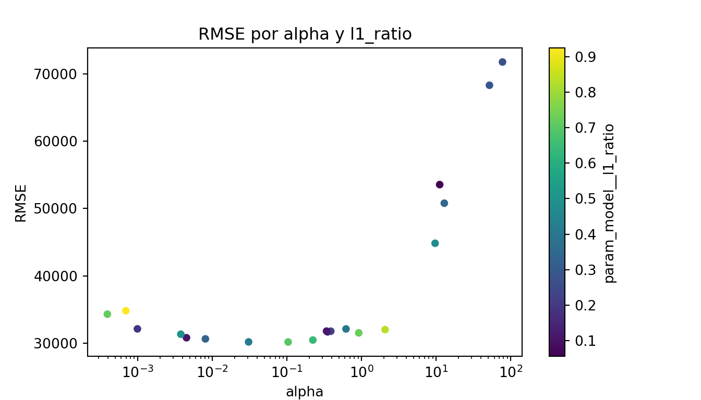
En la siguiente gráfica observamos la \(R^2\) asociada a distintos niveles de regularización.
elasticnet_cv_results.plot.scatter(
x="param_model__alpha",
y="mean_test_rsq",
c="param_model__l1_ratio",
colormap="viridis",
logx=True,
figsize=(7, 4),
)## <Axes: xlabel='param_model__alpha', ylabel='mean_test_rsq'>plt.title("R cuadrada por alpha y l1_ratio")## Text(0.5, 1.0, 'R cuadrada por alpha y l1_ratio')plt.xlabel("alpha")## Text(0.5, 0, 'alpha')plt.ylabel("R cuadrada promedio en CV")## Text(0, 0.5, 'R cuadrada promedio en CV')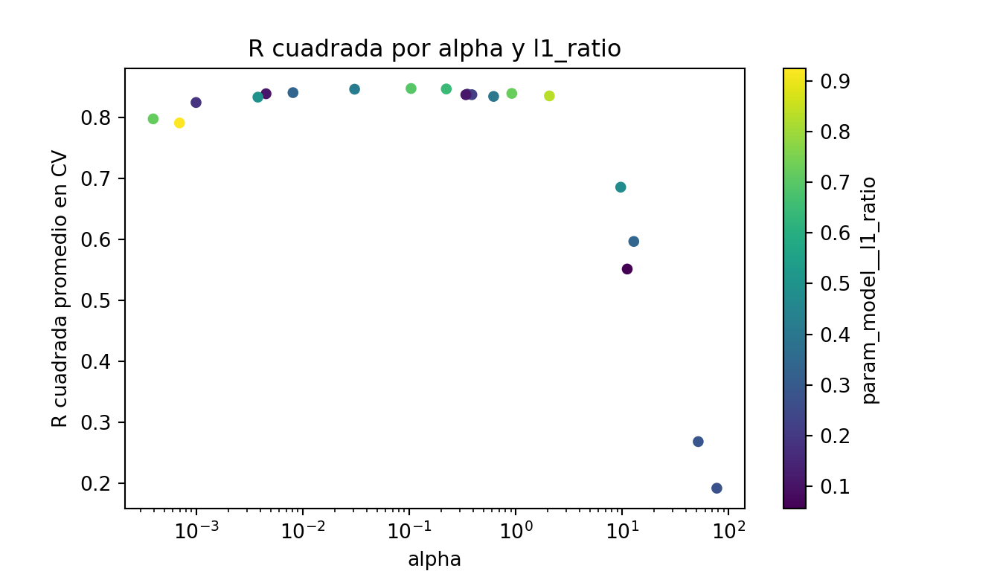
Paso 8: Selección de modelo a usar
Con el siguiente código obtenemos los mejores 10 modelos respecto al rmse.
best_cv_results(elasticnet_tune_result, metric="rmse", n=10)## param_model__alpha param_model__l1_ratio ... mean_test_rsq std_test_rsq
## 19 0.104019 0.694320 ... 0.847080 0.076950
## 1 0.030692 0.413663 ... 0.845955 0.081147
## 17 0.222962 0.646433 ... 0.846339 0.068282
## 7 0.008095 0.337886 ... 0.840324 0.086065
## 4 0.004518 0.110866 ... 0.838489 0.086498
## 8 0.003790 0.497217 ... 0.832923 0.086817
## 11 0.919325 0.726009 ... 0.838989 0.055218
## 9 0.351388 0.202736 ... 0.837816 0.054005
## 3 0.387740 0.224550 ... 0.836970 0.053200
## 12 0.340086 0.108797 ... 0.836872 0.053109
##
## [10 rows x 10 columns]Ahora obtendremos el modelo que mejor desempeño tiene tomando en cuenta el rmse.
best_elasticnet_regression_model = elasticnet_tune_result.best_params_
best_elasticnet_regression_model## {'model__alpha': 0.10401853554143241, 'model__l1_ratio': 0.6943204599531325}Paso 9: Ajuste de modelo final con todos los datos (Vuelve al paso 2, si es necesario)
final_elasticnet_regression_model = elasticnet_tune_result.best_estimator_
final_elasticnet_regression_model## Pipeline(steps=[('features',
## DataFrameFunctionTransformer(func=<function preprocess_ames_frame at 0x17af62660>,
## kw_args={'keep_target': False,
## 'large': False})),
## ('preprocess',
## ColumnTransformer(transformers=[('num',
## Pipeline(steps=[('imputer',
## SimpleImputer(strategy='median')),
## ('scaler',
## StandardScaler())]),
## <sklearn.compose._column_transformer.make_column_sele...
## ('cat',
## Pipeline(steps=[('imputer',
## SimpleImputer(strategy='most_frequent')),
## ('onehot',
## OneHotEncoder(handle_unknown='ignore',
## sparse_output=False))]),
## <sklearn.compose._column_transformer.make_column_selector object at 0x17af85bd0>)],
## verbose_feature_names_out=False)),
## ('model',
## ElasticNet(alpha=0.10401853554143241,
## l1_ratio=0.6943204599531325, max_iter=20000))])Este último objeto es el modelo final entrenado, el cual contiene toda la información del pre-procesamiento de datos, por lo que en caso de ponerse en producción el modelo, sólo se necesita de este último elemento para poder realizar nuevas predicciones.
Antes de pasar al siguiente paso, es importante validar que hayamos hecho un uso correcto de las variables predictivas. En este momento es posible detectar variables que no estén aportando valor o variables que no debiéramos estar usando debido a que cometeríamos data leakage. Para enfrentar esto, ayuda estimar y ordenar el valor de importancia de cada variable en el modelo. En modelos lineales regularizados podemos inspeccionar los coeficientes después del preprocesamiento.
feature_names = final_elasticnet_regression_model.named_steps["preprocess"].get_feature_names_out()
coeficientes_elasticnet = (
pd.DataFrame(
{
"Variable": feature_names,
"Coeficiente": final_elasticnet_regression_model.named_steps["model"].coef_,
}
)
.assign(Importancia=lambda data: data["Coeficiente"].abs())
.sort_values("Importancia", ascending=False)
)
display(coeficientes_elasticnet.head(20))## Variable Coeficiente Importancia
## 224 KitchenQual_Ex 14437.983587 14437.983587
## 32 TotalSF 14225.140470 14225.140470
## 78 Neighborhood_NoRidge 12854.858425 12854.858425
## 4 OverallQual 12848.290735 12848.290735
## 12 2ndFlrSF 11187.565521 11187.565521
## 177 BsmtQual_Ex 11078.932060 11078.932060
## 100 Condition2_PosN -10180.265255 10180.265255
## 85 Neighborhood_StoneBr 10038.481215 10038.481215
## 69 Neighborhood_Crawfor 9715.457535 9715.457535
## 79 Neighborhood_NridgHt 9318.691843 9318.691843
## 162 ExterQual_Ex 9003.326027 9003.326027
## 187 Bsmt_Exposure_Gd 8856.923729 8856.923729
## 90 Condition_1_Norm 8753.194504 8753.194504
## 128 RoofMatl_WdShngl 8726.962340 8726.962340
## 99 Condition2_Norm 8444.910147 8444.910147
## 17 TotRms_AbvGrd 8177.439407 8177.439407
## 11 1stFlrSF 7799.356230 7799.356230
## 70 Neighborhood_Edwards -7743.973179 7743.973179
## 74 Neighborhood_Mitchel -7572.701520 7572.701520
## 226 KitchenQual_Gd -7571.867218 7571.867218ax = coeficientes_elasticnet.head(20).sort_values("Importancia").plot.barh(
x="Variable", y="Importancia", legend=False, figsize=(8, 6)
)
ax.set_title("Importancia de las variables")## Text(0.5, 1.0, 'Importancia de las variables')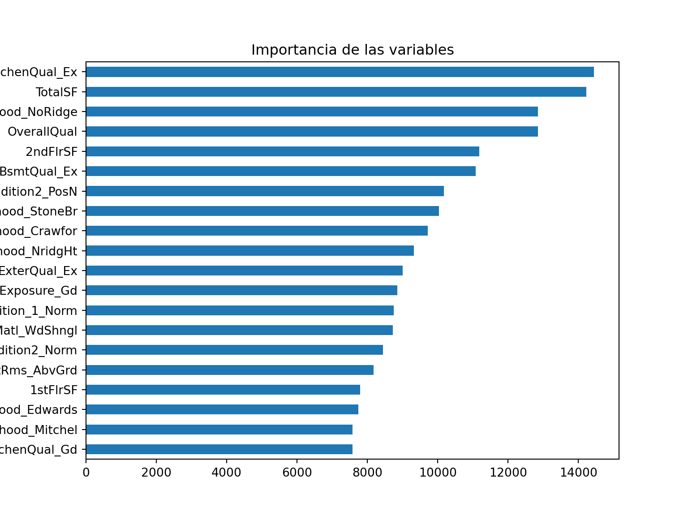
Paso 10: Validar poder predictivo con datos de prueba
Imaginemos por un momento que pasa un mes de tiempo desde que hicimos nuestro modelo, es hora de ponerlo a prueba prediciendo valores de nuevos elementos:
results = pd.DataFrame(
{
"Sale_Price": y_ames_test.to_numpy(),
"pred_elasticnet_reg": final_elasticnet_regression_model.predict(X_ames_test),
}
)
results.head()## Sale_Price pred_elasticnet_reg
## 0 253000 239422.824464
## 1 161750 149116.484582
## 2 89471 125326.437023
## 3 314813 337602.408500
## 4 180500 200519.046507Métricas de desempeño
Ahora para calcular las métricas de desempeño usaremos funciones de sklearn.metrics envueltas en una utilidad del repositorio:
regression_metrics(results["Sale_Price"], results["pred_elasticnet_reg"]).assign(
estimate=lambda data: data["estimate"].round(2)
)## metric estimate
## 0 rmse 41396.85
## 1 mae 17782.71
## 2 mape 0.11
## 3 rsq 0.71
## 4 ccc 0.86plt.figure(figsize=(6, 5))## <Figure size 1200x1000 with 0 Axes>plt.scatter(results["pred_elasticnet_reg"], results["Sale_Price"], alpha=0.6)## <matplotlib.collections.PathCollection object at 0x307e66b90>lims = [
results[["pred_elasticnet_reg", "Sale_Price"]].min().min(),
results[["pred_elasticnet_reg", "Sale_Price"]].max().max(),
]
plt.plot(lims, lims, color="red")## [<matplotlib.lines.Line2D object at 0x303333290>]plt.xlabel("Predicción")## Text(0.5, 0, 'Predicción')plt.ylabel("Observación")## Text(0, 0.5, 'Observación')plt.title("Comparación")## Text(0.5, 1.0, 'Comparación')plt.tight_layout()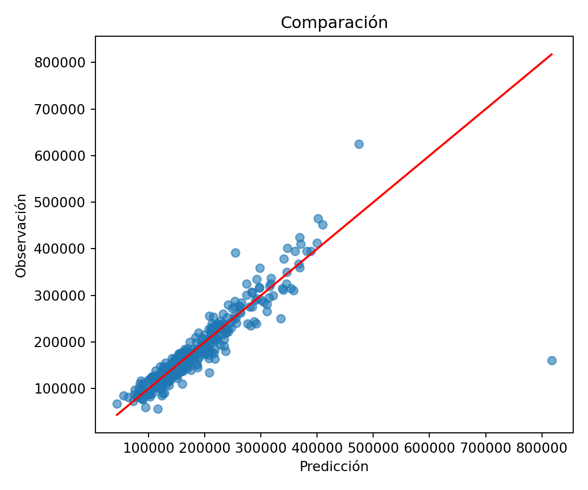
3.5.2 Clasificación
Para clasificación usaremos regresión logística con penalización elasticnet. En scikit-learn, la regresión logística usa C como inverso de la regularización: valores pequeños de C implican una penalización más fuerte.
Paso 1: Separación inicial de datos (test, train)
telco = load_telco("data/Churn.csv")
telco_train, telco_test = train_test_split(
telco,
train_size=0.70,
random_state=1234,
stratify=telco["Churn"],
)
X_telco_train = telco_train.drop(columns="Churn")
y_telco_train = telco_train["Churn"]
X_telco_test = telco_test.drop(columns="Churn")
y_telco_test = telco_test["Churn"]
telco_folds = StratifiedKFold(n_splits=5, shuffle=True, random_state=1234)
telco_train.head()## customerID gender SeniorCitizen ... MonthlyCharges TotalCharges Churn
## 4466 4806-KEXQR Male 0 ... 79.90 324.30 Yes
## 4246 5153-LXKDT Male 0 ... 110.20 7467.50 No
## 2462 2585-KTFRE Male 0 ... 70.45 70.45 No
## 6778 5893-KCLGT Female 0 ... 19.75 1567.00 No
## 1992 3365-SAIGS Female 0 ... 83.55 1329.15 No
##
## [5 rows x 21 columns]Paso 2: Pre-procesamiento e ingeniería de variables
telco_rec = make_telco_pipeline(
LogisticRegression(penalty="elasticnet", solver="saga", l1_ratio=0.5, max_iter=5_000),
scale_numeric=True,
)
telco_rec## Pipeline(steps=[('features',
## DataFrameFunctionTransformer(func=<function preprocess_telco_frame at 0x17af625c0>,
## kw_args={'keep_target': False})),
## ('preprocess',
## ColumnTransformer(transformers=[('num',
## Pipeline(steps=[('imputer',
## SimpleImputer(strategy='median')),
## ('scaler',
## StandardScaler())]),
## <sklearn.compose._column_transformer.make_column_selector object at 0...
## ('cat',
## Pipeline(steps=[('imputer',
## SimpleImputer(strategy='most_frequent')),
## ('onehot',
## OneHotEncoder(handle_unknown='ignore',
## sparse_output=False))]),
## <sklearn.compose._column_transformer.make_column_selector object at 0x30e0c0050>)],
## verbose_feature_names_out=False)),
## ('model',
## LogisticRegression(l1_ratio=0.5, max_iter=5000,
## penalty='elasticnet', solver='saga'))])Paso 3: Selección de tipo de modelo con hiperparámetros iniciales
elasticnet_class_model = LogisticRegression(
penalty="elasticnet",
solver="saga",
l1_ratio=0.5,
max_iter=5_000,
random_state=1234,
)
elasticnet_class_model## LogisticRegression(l1_ratio=0.5, max_iter=5000, penalty='elasticnet',
## random_state=1234, solver='saga')Paso 4: Inicialización de workflow o pipeline
elasticnet_class_workflow = make_telco_pipeline(elasticnet_class_model, scale_numeric=True)
elasticnet_class_workflow## Pipeline(steps=[('features',
## DataFrameFunctionTransformer(func=<function preprocess_telco_frame at 0x17af625c0>,
## kw_args={'keep_target': False})),
## ('preprocess',
## ColumnTransformer(transformers=[('num',
## Pipeline(steps=[('imputer',
## SimpleImputer(strategy='median')),
## ('scaler',
## StandardScaler())]),
## <sklearn.compose._column_transformer.make_column_selector object at 0...
## Pipeline(steps=[('imputer',
## SimpleImputer(strategy='most_frequent')),
## ('onehot',
## OneHotEncoder(handle_unknown='ignore',
## sparse_output=False))]),
## <sklearn.compose._column_transformer.make_column_selector object at 0x3028fa9d0>)],
## verbose_feature_names_out=False)),
## ('model',
## LogisticRegression(l1_ratio=0.5, max_iter=5000,
## penalty='elasticnet', random_state=1234,
## solver='saga'))])Paso 5: Creación de grid search
elasticnet_class_param_distributions = {
"model__C": loguniform(1e-2, 1e2),
"model__l1_ratio": uniform(0.05, 0.95),
}
classification_scoring = {
"roc_auc": "roc_auc",
"pr_auc": make_scorer(
average_precision_score,
response_method="predict_proba",
pos_label="Yes",
),
}
elasticnet_class_param_distributions## {'model__C': <scipy.stats._distn_infrastructure.rv_continuous_frozen object at 0x17e2f3990>, 'model__l1_ratio': <scipy.stats._distn_infrastructure.rv_continuous_frozen object at 0x3028fb810>}Paso 6: Entrenamiento de modelos con hiperparámetros definidos
elasticnet_class_tune_result = RandomizedSearchCV(
elasticnet_class_workflow,
param_distributions=elasticnet_class_param_distributions,
n_iter=50,
cv=telco_folds,
scoring=classification_scoring,
refit="pr_auc",
random_state=1234,
n_jobs=-1,
)
elasticnet_class_tune_result.fit(X_telco_train, y_telco_train)
import joblib
joblib.dump(elasticnet_class_tune_result, "models/elasticnet_class_model.joblib")Paso 7: Análisis de métricas de error e hiperparámetros (Vuelve al paso 3, si es necesario)
elasticnet_class_tune_result = RandomizedSearchCV(
elasticnet_class_workflow,
param_distributions=elasticnet_class_param_distributions,
n_iter=20,
cv=telco_folds,
scoring=classification_scoring,
refit="pr_auc",
random_state=1234,
n_jobs=-1,
)
elasticnet_class_tune_result.fit(X_telco_train, y_telco_train)## RandomizedSearchCV(cv=StratifiedKFold(n_splits=5, random_state=1234, shuffle=True),
## estimator=Pipeline(steps=[('features',
## DataFrameFunctionTransformer(func=<function preprocess_telco_frame at 0x17af625c0>,
## kw_args={'keep_target': False})),
## ('preprocess',
## ColumnTransformer(transformers=[('num',
## Pipeline(steps=[('imputer',
## SimpleImputer(strategy='median')),
## ('sca...
## param_distributions={'model__C': <scipy.stats._distn_infrastructure.rv_continuous_frozen object at 0x17e2f3990>,
## 'model__l1_ratio': <scipy.stats._distn_infrastructure.rv_continuous_frozen object at 0x3028fb810>},
## random_state=1234, refit='pr_auc',
## scoring={'pr_auc': make_scorer(average_precision_score, response_method='predict_proba', pos_label=Yes),
## 'roc_auc': 'roc_auc'})best_cv_results(elasticnet_class_tune_result, metric="pr_auc", n=10)## param_model__C param_model__l1_ratio ... mean_test_pr_auc std_test_pr_auc
## 14 0.185074 0.589694 ... 0.653696 0.022518
## 10 0.288100 0.634626 ... 0.653637 0.022340
## 5 0.269941 0.525945 ... 0.653513 0.022424
## 7 0.302693 0.583136 ... 0.653432 0.022319
## 19 0.586899 0.913850 ... 0.653197 0.022646
## 13 0.387981 0.799294 ... 0.653164 0.022648
## 3 0.127602 0.811779 ... 0.653015 0.023412
## 1 0.563522 0.796091 ... 0.653002 0.022672
## 8 1.028804 0.063080 ... 0.652738 0.022068
## 9 12.339754 0.888509 ... 0.652443 0.023309
##
## [10 rows x 6 columns]En la siguiente gráfica observamos las distintas métricas de error asociadas a los hiperparámetros elegidos:
elasticnet_class_results = pd.DataFrame(elasticnet_class_tune_result.cv_results_)
elasticnet_class_results.plot.scatter(
x="param_model__C",
y="mean_test_pr_auc",
c="param_model__l1_ratio",
colormap="viridis",
logx=True,
figsize=(7, 4),
)## <Axes: xlabel='param_model__C', ylabel='mean_test_pr_auc'>plt.title("PR AUC por C y l1_ratio")## Text(0.5, 1.0, 'PR AUC por C y l1_ratio')plt.xlabel("C")## Text(0.5, 0, 'C')plt.ylabel("PR AUC promedio en CV")## Text(0, 0.5, 'PR AUC promedio en CV')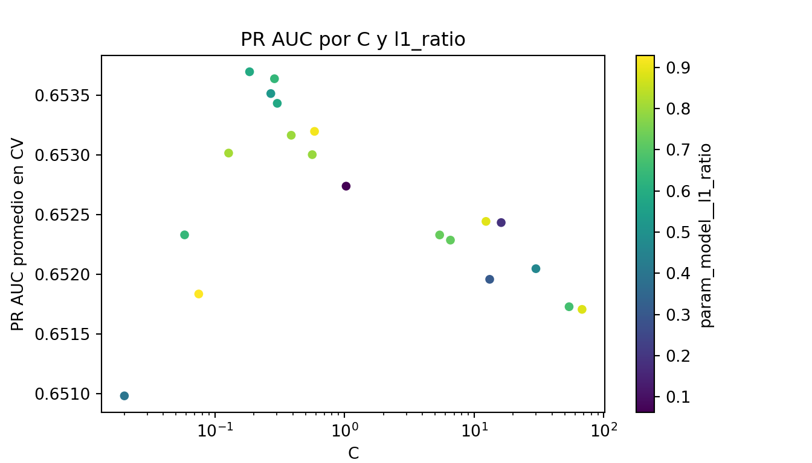
best_cv_results(elasticnet_class_tune_result, metric="roc_auc", n=10)## param_model__C param_model__l1_ratio ... mean_test_pr_auc std_test_pr_auc
## 3 0.127602 0.811779 ... 0.653015 0.023412
## 14 0.185074 0.589694 ... 0.653696 0.022518
## 0 0.058355 0.641003 ... 0.652331 0.024322
## 18 0.075019 0.928624 ... 0.651836 0.024101
## 13 0.387981 0.799294 ... 0.653164 0.022648
## 10 0.288100 0.634626 ... 0.653637 0.022340
## 5 0.269941 0.525945 ... 0.653513 0.022424
## 19 0.586899 0.913850 ... 0.653197 0.022646
## 7 0.302693 0.583136 ... 0.653432 0.022319
## 1 0.563522 0.796091 ... 0.653002 0.022672
##
## [10 rows x 6 columns]best_cv_results(elasticnet_class_tune_result, metric="pr_auc", n=10)## param_model__C param_model__l1_ratio ... mean_test_pr_auc std_test_pr_auc
## 14 0.185074 0.589694 ... 0.653696 0.022518
## 10 0.288100 0.634626 ... 0.653637 0.022340
## 5 0.269941 0.525945 ... 0.653513 0.022424
## 7 0.302693 0.583136 ... 0.653432 0.022319
## 19 0.586899 0.913850 ... 0.653197 0.022646
## 13 0.387981 0.799294 ... 0.653164 0.022648
## 3 0.127602 0.811779 ... 0.653015 0.023412
## 1 0.563522 0.796091 ... 0.653002 0.022672
## 8 1.028804 0.063080 ... 0.652738 0.022068
## 9 12.339754 0.888509 ... 0.652443 0.023309
##
## [10 rows x 6 columns]Paso 8: Selección de modelo a usar
best_elasticnet_class_model = elasticnet_class_tune_result.best_params_
best_elasticnet_class_model## {'model__C': 0.18507360675642764, 'model__l1_ratio': 0.5896937199947657}Paso 9: Ajuste de modelo final con todos los datos (Vuelve al paso 2, si es necesario)
final_elasticnet_class_model = elasticnet_class_tune_result.best_estimator_
final_elasticnet_class_model## Pipeline(steps=[('features',
## DataFrameFunctionTransformer(func=<function preprocess_telco_frame at 0x17af625c0>,
## kw_args={'keep_target': False})),
## ('preprocess',
## ColumnTransformer(transformers=[('num',
## Pipeline(steps=[('imputer',
## SimpleImputer(strategy='median')),
## ('scaler',
## StandardScaler())]),
## <sklearn.compose._column_transformer.make_column_selector object at 0...
## SimpleImputer(strategy='most_frequent')),
## ('onehot',
## OneHotEncoder(handle_unknown='ignore',
## sparse_output=False))]),
## <sklearn.compose._column_transformer.make_column_selector object at 0x30512b590>)],
## verbose_feature_names_out=False)),
## ('model',
## LogisticRegression(C=0.18507360675642764,
## l1_ratio=0.5896937199947657, max_iter=5000,
## penalty='elasticnet', random_state=1234,
## solver='saga'))])Como hemos hablado anteriormente, este último objeto es el modelo final entrenado, el cual contiene toda la información del pre-procesamiento de datos, por lo que en caso de ponerse en producción el modelo, sólo se necesita de este último elemento para poder realizar nuevas predicciones.
Antes de pasar al siguiente paso, es importante validar que hayamos hecho un uso correcto de las variables predictivas. En modelos lineales regularizados podemos revisar los coeficientes para identificar qué variables tienen mayor peso en la predicción.
telco_feature_names = final_elasticnet_class_model.named_steps["preprocess"].get_feature_names_out()
coeficientes_churn = (
pd.DataFrame(
{
"Variable": telco_feature_names,
"Coeficiente": final_elasticnet_class_model.named_steps["model"].coef_.ravel(),
}
)
.assign(Importancia=lambda data: data["Coeficiente"].abs())
.sort_values("Importancia", ascending=False)
)
display(coeficientes_churn.head(20))## Variable Coeficiente Importancia
## 28 Contract_Month-to-month 0.814884 0.814884
## 30 Contract_Two year -0.773442 0.773442
## 37 tenure_band_0-1 year 0.755383 0.755383
## 14 InternetService_Fiber optic 0.723197 0.723197
## 15 InternetService_No -0.501953 0.501953
## 2 TotalCharges -0.403417 0.403417
## 1 MonthlyCharges 0.365254 0.365254
## 35 PaymentMethod_Electronic check 0.280420 0.280420
## 10 PhoneService_Yes -0.256409 0.256409
## 9 PhoneService_No 0.247064 0.247064
## 17 OnlineSecurity_Yes -0.213879 0.213879
## 16 OnlineSecurity_No 0.204533 0.204533
## 31 PaperlessBilling_No -0.184594 0.184594
## 32 PaperlessBilling_Yes 0.175248 0.175248
## 23 TechSupport_Yes -0.161941 0.161941
## 22 TechSupport_No 0.152596 0.152596
## 0 SeniorCitizen 0.128103 0.128103
## 24 StreamingTV_No -0.111833 0.111833
## 25 StreamingTV_Yes 0.102487 0.102487
## 26 StreamingMovies_No -0.099695 0.099695ax = coeficientes_churn.head(20).sort_values("Importancia").plot.barh(
x="Variable", y="Importancia", legend=False, figsize=(8, 6)
)
ax.set_title("Importancia de las variables")## Text(0.5, 1.0, 'Importancia de las variables')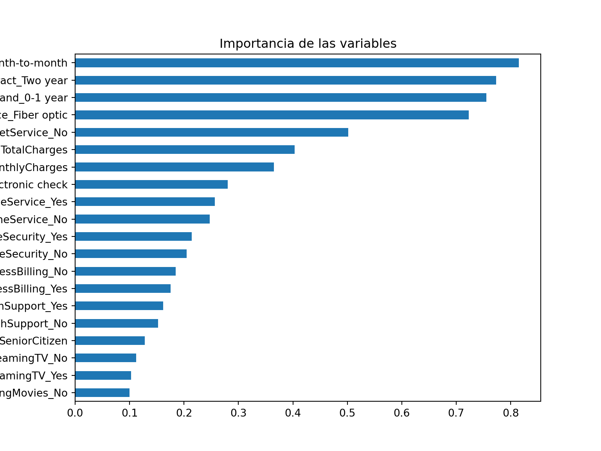
Paso 10: Validar poder predictivo con datos de prueba
Imaginemos por un momento que pasa un mes de tiempo desde que hicimos nuestro modelo, es hora de ponerlo a prueba prediciendo valores de nuevos elementos:
class_labels = list(final_elasticnet_class_model.named_steps["model"].classes_)
proba_yes_index = class_labels.index("Yes")
class_results = pd.DataFrame(
{
"Churn": y_telco_test.to_numpy(),
"pred_Yes": final_elasticnet_class_model.predict_proba(X_telco_test)[:, proba_yes_index],
}
)
class_results.head()## Churn pred_Yes
## 0 No 0.112244
## 1 No 0.256926
## 2 No 0.026061
## 3 Yes 0.543400
## 4 Yes 0.460708classification_metrics(class_results["Churn"], class_results["pred_Yes"], positive_label="Yes")## metric estimate
## 0 roc_auc 0.832870
## 1 pr_auc 0.623447A continuación, conoceremos el nivel de sensitividad y especificidad para cada punto de corte:
roc_curve_data = roc_curve_table(
class_results["Churn"],
class_results["pred_Yes"],
positive_label="Yes",
)
roc_curve_data.head()## threshold specificity sensitivity
## 0 inf 1.000000 0.000000
## 1 0.873089 1.000000 0.001783
## 2 0.869148 1.000000 0.003565
## 3 0.862959 0.999356 0.003565
## 4 0.861174 0.999356 0.005348A través de estas métricas es posible crear la curva ROC:
plt.figure(figsize=(5, 5))## <Figure size 1000x1000 with 0 Axes>plt.plot(1 - roc_curve_data["specificity"], roc_curve_data["sensitivity"], color="lightblue", lw=2)## [<matplotlib.lines.Line2D object at 0x30e0a3790>]plt.plot([0, 1], [0, 1], color="gray", linestyle="--")## [<matplotlib.lines.Line2D object at 0x30e50c410>]plt.xlabel("1 - especificidad")## Text(0.5, 0, '1 - especificidad')plt.ylabel("sensitividad")## Text(0, 0.5, 'sensitividad')plt.title("ROC Curve")## Text(0.5, 1.0, 'ROC Curve')plt.axis("square")## (-0.05, 1.05, -0.05, 1.05)plt.tight_layout()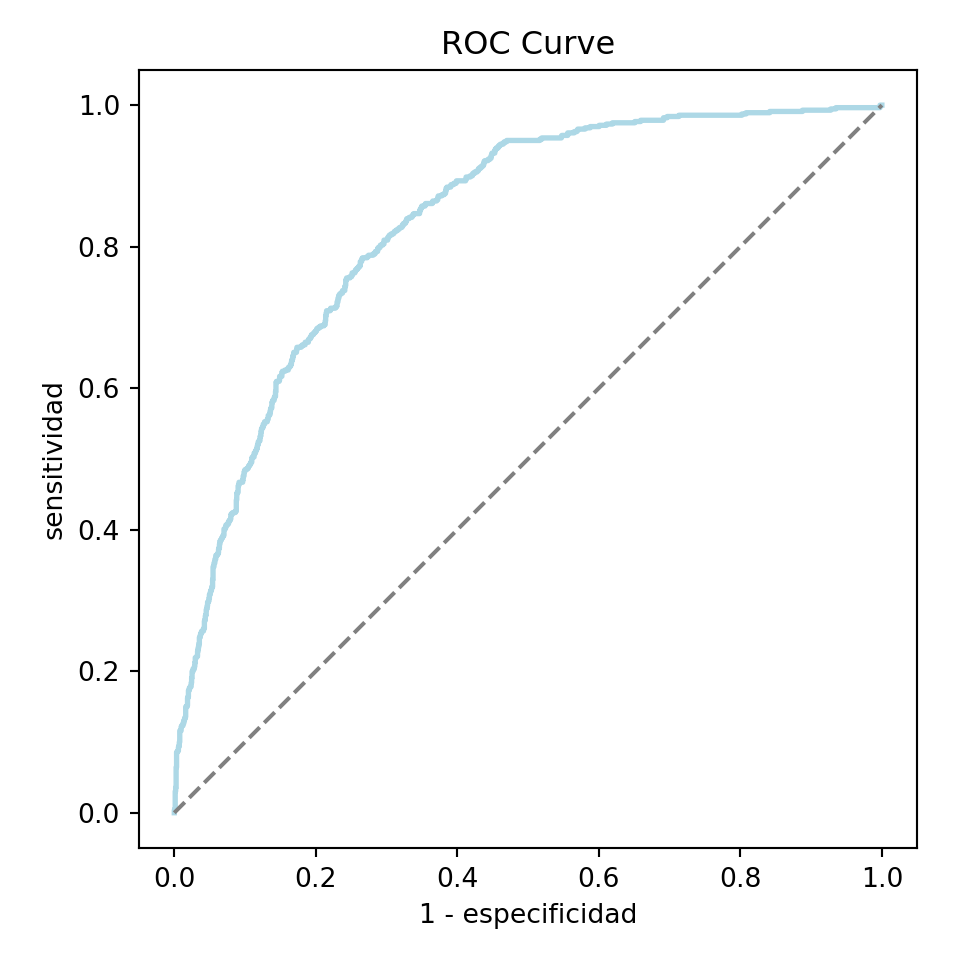
De igual manera, podemos calcular la precisión y cobertura para cada punto de corte:
pr_curve_data = pr_curve_table(
class_results["Churn"],
class_results["pred_Yes"],
positive_label="Yes",
)
pr_curve_data.head()## threshold precision recall
## 0 0.009236 0.265499 1.0
## 1 0.009293 0.265625 1.0
## 2 0.009606 0.265751 1.0
## 3 0.009627 0.265877 1.0
## 4 0.009834 0.266003 1.0Y graficar su respectiva curva:
plt.figure(figsize=(5, 5))## <Figure size 1000x1000 with 0 Axes>plt.plot(pr_curve_data["recall"], pr_curve_data["precision"], color="lightblue", lw=2)## [<matplotlib.lines.Line2D object at 0x30e47aa50>]plt.xlabel("cobertura")## Text(0.5, 0, 'cobertura')plt.ylabel("precisión")## Text(0, 0.5, 'precisión')plt.title("Precision vs Recall")## Text(0.5, 1.0, 'Precision vs Recall')plt.ylim(0, 1)## (0.0, 1.0)plt.axis("square")## (-0.05, 1.05, 0.2285714285714286, 1.3285714285714287)plt.tight_layout()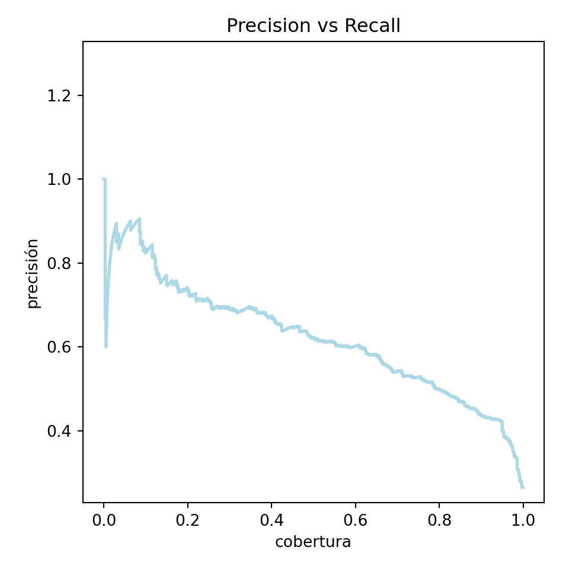